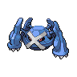

ヤドキング・キュレム・メタグロスを中心カードとしてまとめた分類です。
自動説明：承認済み分類の定義＋所属デッキの採用事実。説明版 30th-profile-v1。対象期間の60枚確認済み72入賞枠・72コード・48大会（未確認0枠）を用いています。



構築プロファイルと人の確認欄
対象期間 2026-10-09〜2026-10-15（7日） / 比較期間 2026-10-02〜2026-10-08（7日） / 取得時点で公開されていた結果の速報です。対象日の終了までの全結果が揃ったことを意味しません。
V2 対面推定（参考値）ヤドキング・キュレム・メタグロスを中心カードとしてまとめた分類です。
自動説明：承認済み分類の定義＋所属デッキの採用事実。説明版 30th-profile-v1。対象期間の60枚確認済み72入賞枠・72コード・48大会（未確認0枠）を用いています。
主戦略、攻撃役、エネルギー構成、例外を分けて記入します。
仮例: 「主攻撃: A / エネルギー: B中心 / 例外: C」
自動生成：所属リストの観測構成
平均枚数の分母：60枚確認済み入賞枠。不採用の0枚と同コードの反復入賞を含む。
中心カード・相方の実測：
ポケモン（採用率80%以上）：キチキギスex 72/72枠・平均1.00枚 / キュレム 72/72枠・平均2.00枚 / メタグロス 72/72枠・平均1.90枚
トレーナーズ（採用率80%以上）：ハイパーボール 72/72枠・平均3.89枚 / ポケパッド 72/72枠・平均3.74枚 / リーリエの決心 72/72枠・平均3.99枚
エネルギー（採用率80%以上）：テレパス超エネルギー 72/72枠・平均3.99枚 / 基本超エネルギー 72/72枠・平均4.07枚 / ブーメランエネルギー 67/72枠・平均1.76枚
採用率80%以上の観測カードを各区分3枚まで表示。構築の安定性・推奨は判定しない。
説明用に指定したカードとエネルギー名の組合せです。相方や構築差を網羅せず、枚数の一致、新分類や戦略の一致を意味しません。
見えたカードから候補派生を置き、根拠・反証・不確実性を併記します。断定しません。
仮例: 「Xを観測。Y型候補だが、Z未確認のため保留」
自動生成：型候補の識別根拠
公開カードの目撃は型候補の手掛かりです。未目撃は不採用の証拠ではありません。不採用条件は完全60枚リストでのみ確認できます。
採用の手掛かり：ヤドキング・キュレム・メタグロス。
所属分類の完全リストで説明条件に同時一致：72/72枠・72コード。不一致：0枠・0コード。他分類で同じ条件に一致：1/1450枠・1コード。
説明用の条件は他分類と重なることがあり、承認済みコード対応を置き換えません。対応表は学習分類器ではなく、カード効果・戦略・新規コードの分類は説明できません。
機械選定の規則と、人が典型例と判断した根拠を分けて残します。
仮例: 「機械: 順位・日付順 / 人の典型判断: 未確認」
候補自デッキからの対面方針、先後、注意、練習結果を記入します。ほかのメンバー意見と未検証も分けます。
仮例: 「先攻希望 / 注意: X / 練習: 未検証」
主サブ攻撃や戦い方を変える差、代表コードを記入します。
仮例: 「サブ攻撃Bを採用する型 / 代表コード: ABC」
採用リスト数は60枚確認済みの公開入賞枠数です。カード枚数ではありません。採用枚数分布の分母は、対象期間72枠・比較期間53枠です。平均採用枚数は0枚を含む60枚確認済み公開入賞枠の平均です。0枚は不採用として区別し、1枚以上は実測のある枚数だけを示します。分母が未確認なら率を補完しません。
| カード | 対象期間採用リスト数 | 対象期間採用率 | 対象期間の採用枚数分布 | 比較期間採用リスト数 | 比較期間採用率 | 比較期間の採用枚数分布 | 差分 | 分類 |
|---|---|---|---|---|---|---|---|---|
| キチキギスex | 72 | 100.00% | 平均 1.00枚 / 分母72枠0枚（不採用） 0.00%（0枠）1枚 100.00%（72枠） | 53 | 100.00% | 平均 1.00枚 / 分母53枠0枚（不採用） 0.00%（0枠）1枚 100.00%（53枠） | +0.00pt | 入賞枠単位の採用事実 |
| キュレム | 72 | 100.00% | 平均 2.00枚 / 分母72枠0枚（不採用） 0.00%（0枠）2枚 100.00%（72枠） | 53 | 100.00% | 平均 2.00枚 / 分母53枠0枚（不採用） 0.00%（0枠）2枚 100.00%（53枠） | +0.00pt | 入賞枠単位の採用事実 |
| テレパス超エネルギー | 72 | 100.00% | 平均 3.99枚 / 分母72枠0枚（不採用） 0.00%（0枠）3枚 1.39%（1枠）4枚 98.61%（71枠） | 53 | 100.00% | 平均 3.96枚 / 分母53枠0枚（不採用） 0.00%（0枠）3枚 3.77%（2枠）4枚 96.23%（51枠） | +0.00pt | 入賞枠単位の採用事実 |
| ハイパーボール | 72 | 100.00% | 平均 3.89枚 / 分母72枠0枚（不採用） 0.00%（0枠）2枚 2.78%（2枠）3枚 5.56%（4枠）4枚 91.67%（66枠） | 53 | 100.00% | 平均 3.94枚 / 分母53枠0枚（不採用） 0.00%（0枠）3枚 5.66%（3枠）4枚 94.34%（50枠） | +0.00pt | 入賞枠単位の採用事実 |
| ポケパッド | 72 | 100.00% | 平均 3.74枚 / 分母72枠0枚（不採用） 0.00%（0枠）3枚 26.39%（19枠）4枚 73.61%（53枠） | 53 | 100.00% | 平均 3.83枚 / 分母53枠0枚（不採用） 0.00%（0枠）3枚 16.98%（9枠）4枚 83.02%（44枠） | +0.00pt | 入賞枠単位の採用事実 |
| メタグロス | 72 | 100.00% | 平均 1.90枚 / 分母72枠0枚（不採用） 0.00%（0枠）1枚 9.72%（7枠）2枚 90.28%（65枠） | 53 | 100.00% | 平均 1.83枚 / 分母53枠0枚（不採用） 0.00%（0枠）1枚 16.98%（9枠）2枚 83.02%（44枠） | +0.00pt | 入賞枠単位の採用事実 |
| ヤドキング | 72 | 100.00% | 平均 3.00枚 / 分母72枠0枚（不採用） 0.00%（0枠）3枚 100.00%（72枠） | 53 | 100.00% | 平均 2.96枚 / 分母53枠0枚（不採用） 0.00%（0枠）2枚 3.77%（2枠）3枚 96.23%（51枠） | +0.00pt | 入賞枠単位の採用事実 |
| ヤドン | 72 | 100.00% | 平均 3.97枚 / 分母72枠0枚（不採用） 0.00%（0枠）3枚 2.78%（2枠）4枚 97.22%（70枠） | 53 | 100.00% | 平均 3.94枚 / 分母53枠0枚（不採用） 0.00%（0枠）3枚 5.66%（3枠）4枚 94.34%（50枠） | +0.00pt | 入賞枠単位の採用事実 |
| ラティアスex | 72 | 100.00% | 平均 1.99枚 / 分母72枠0枚（不採用） 0.00%（0枠）1枚 1.39%（1枠）2枚 98.61%（71枠） | 53 | 100.00% | 平均 1.96枚 / 分母53枠0枚（不採用） 0.00%（0枠）1枚 3.77%（2枠）2枚 96.23%（51枠） | +0.00pt | 入賞枠単位の採用事実 |
| リーリエのピッピex | 72 | 100.00% | 平均 1.00枚 / 分母72枠0枚（不採用） 0.00%（0枠）1枚 100.00%（72枠） | 53 | 100.00% | 平均 1.00枚 / 分母53枠0枚（不採用） 0.00%（0枠）1枚 100.00%（53枠） | +0.00pt | 入賞枠単位の採用事実 |
| リーリエの決心 | 72 | 100.00% | 平均 3.99枚 / 分母72枠0枚（不採用） 0.00%（0枠）3枚 1.39%（1枠）4枚 98.61%（71枠） | 53 | 100.00% | 平均 3.91枚 / 分母53枠0枚（不採用） 0.00%（0枠）1枚 1.89%（1枠）3枚 3.77%（2枠）4枚 94.34%（50枠） | +0.00pt | 入賞枠単位の採用事実 |
| ワンダーパッチ | 72 | 100.00% | 平均 3.01枚 / 分母72枠0枚（不採用） 0.00%（0枠）2枚 2.78%（2枠）3枚 93.06%（67枠）4枚 4.17%（3枠） | 53 | 100.00% | 平均 3.08枚 / 分母53枠0枚（不採用） 0.00%（0枠）3枚 92.45%（49枠）4枚 7.55%（4枠） | +0.00pt | 入賞枠単位の採用事実 |
| 基本超エネルギー | 72 | 100.00% | 平均 4.07枚 / 分母72枠0枚（不採用） 0.00%（0枠）3枚 4.17%（3枠）4枚 87.50%（63枠）5枚 5.56%（4枠）6枚 2.78%（2枠） | 53 | 100.00% | 平均 4.09枚 / 分母53枠0枚（不採用） 0.00%（0枠）3枚 3.77%（2枠）4枚 83.02%（44枠）5枚 13.21%（7枠） | +0.00pt | 入賞枠単位の採用事実 |
| 夜のアカデミー | 72 | 100.00% | 平均 4.00枚 / 分母72枠0枚（不採用） 0.00%（0枠）4枚 100.00%（72枠） | 53 | 100.00% | 平均 3.98枚 / 分母53枠0枚（不採用） 0.00%（0枠）3枚 1.89%（1枠）4枚 98.11%（52枠） | +0.00pt | 入賞枠単位の採用事実 |
| 夜のタンカ | 72 | 100.00% | 平均 2.15枚 / 分母72枠0枚（不採用） 0.00%（0枠）1枚 23.61%（17枠）2枚 38.89%（28枠）3枚 36.11%（26枠）4枚 1.39%（1枠） | 53 | 100.00% | 平均 2.09枚 / 分母53枠0枚（不採用） 0.00%（0枠）1枚 16.98%（9枠）2枚 56.60%（30枠）3枚 26.42%（14枠） | +0.00pt | 入賞枠単位の採用事実 |
| メガガルーラex | 71 | 98.61% | 平均 3.10枚 / 分母72枠0枚（不採用） 1.39%（1枠）2枚 5.56%（4枠）3枚 73.61%（53枠）4枚 19.44%（14枠） | 52 | 98.11% | 平均 3.04枚 / 分母53枠0枚（不採用） 1.89%（1枠）2枚 11.32%（6枠）3枚 66.04%（35枠）4枚 20.75%（11枠） | +0.50pt | 入賞枠単位の採用事実 |
| 暗号マニアの解読 | 71 | 98.61% | 平均 3.62枚 / 分母72枠0枚（不採用） 1.39%（1枠）2枚 4.17%（3枠）3枚 23.61%（17枠）4枚 70.83%（51枠） | 52 | 98.11% | 平均 3.62枚 / 分母53枠0枚（不採用） 1.89%（1枠）2枚 1.89%（1枠）3枚 26.42%（14枠）4枚 69.81%（37枠） | +0.50pt | 入賞枠単位の採用事実 |
| ニャースex | 70 | 97.22% | 平均 1.00枚 / 分母72枠0枚（不採用） 2.78%（2枠）1枚 94.44%（68枠）2枚 2.78%（2枠） | 52 | 98.11% | 平均 0.98枚 / 分母53枠0枚（不採用） 1.89%（1枠）1枚 98.11%（52枠） | -0.89pt | 入賞枠単位の採用事実 |
| ブーメランエネルギー | 67 | 93.06% | 平均 1.76枚 / 分母72枠0枚（不採用） 6.94%（5枠）1枚 16.67%（12枠）2枚 69.44%（50枠）3枚 6.94%（5枠） | 49 | 92.45% | 平均 1.58枚 / 分母53枠0枚（不採用） 7.55%（4枠）1枚 28.30%（15枠）2枚 62.26%（33枠）3枚 1.89%（1枠） | +0.60pt | 入賞枠単位の採用事実 |
| プライムキャッチャー | 61 | 84.72% | 平均 0.85枚 / 分母72枠0枚（不採用） 15.28%（11枠）1枚 84.72%（61枠） | 39 | 73.58% | 平均 0.74枚 / 分母53枠0枚（不採用） 26.42%（14枠）1枚 73.58%（39枠） | +11.14pt | 入賞枠単位の採用事実 |
| コノヨザル | 53 | 73.61% | 平均 0.99枚 / 分母72枠0枚（不採用） 26.39%（19枠）1枚 48.61%（35枠）2枚 25.00%（18枠） | 42 | 79.25% | 平均 1.04枚 / 分母53枠0枚（不採用） 20.75%（11枠）1枚 54.72%（29枠）2枚 24.53%（13枠） | -5.63pt | 入賞枠単位の採用事実 |
| ポケモンいれかえ | 47 | 65.28% | 平均 0.72枚 / 分母72枠0枚（不採用） 34.72%（25枠）1枚 58.33%（42枠）2枚 6.94%（5枠） | 42 | 79.25% | 平均 0.89枚 / 分母53枠0枚（不採用） 20.75%（11枠）1枚 69.81%（37枠）2枚 9.43%（5枠） | -13.97pt | 入賞枠単位の採用事実 |
| アンノーン | 40 | 55.56% | 平均 0.56枚 / 分母72枠0枚（不採用） 44.44%（32枠）1枚 55.56%（40枠） | 28 | 52.83% | 平均 0.53枚 / 分母53枠0枚（不採用） 47.17%（25枠）1枚 52.83%（28枠） | +2.73pt | 入賞枠単位の採用事実 |
| パーモット | 33 | 45.83% | 平均 0.46枚 / 分母72枠0枚（不採用） 54.17%（39枠）1枚 45.83%（33枠） | 21 | 39.62% | 平均 0.40枚 / 分母53枠0枚（不採用） 60.38%（32枠）1枚 39.62%（21枠） | +6.21pt | 入賞枠単位の採用事実 |
| サーファー | 30 | 41.67% | 平均 0.42枚 / 分母72枠0枚（不採用） 58.33%（42枠）1枚 41.67%（30枠） | 17 | 32.08% | 平均 0.32枚 / 分母53枠0枚（不採用） 67.92%（36枠）1枚 32.08%（17枠） | +9.59pt | 入賞枠単位の採用事実 |
| スペシャルレッドカード | 26 | 36.11% | 平均 0.38枚 / 分母72枠0枚（不採用） 63.89%（46枠）1枚 34.72%（25枠）2枚 1.39%（1枠） | 13 | 24.53% | 平均 0.25枚 / 分母53枠0枚（不採用） 75.47%（40枠）1枚 24.53%（13枠） | +11.58pt | 入賞枠単位の採用事実 |
| ムチュール | 22 | 30.56% | 平均 0.31枚 / 分母72枠0枚（不採用） 69.44%（50枠）1枚 30.56%（22枠） | 11 | 20.75% | 平均 0.23枚 / 分母53枠0枚（不採用） 79.25%（42枠）1枚 18.87%（10枠）2枚 1.89%（1枠） | +9.80pt | 入賞枠単位の採用事実 |
| せいなるはい | 19 | 26.39% | 平均 0.26枚 / 分母72枠0枚（不採用） 73.61%（53枠）1枚 26.39%（19枠） | 15 | 28.30% | 平均 0.28枚 / 分母53枠0枚（不採用） 71.70%（38枠）1枚 28.30%（15枠） | -1.91pt | 入賞枠単位の採用事実 |
| ゼラオラ | 16 | 22.22% | 平均 0.22枚 / 分母72枠0枚（不採用） 77.78%（56枠）1枚 22.22%（16枠） | 13 | 24.53% | 平均 0.25枚 / 分母53枠0枚（不採用） 75.47%（40枠）1枚 24.53%（13枠） | -2.31pt | 入賞枠単位の採用事実 |
| なかよしポフィン | 9 | 12.50% | 平均 0.17枚 / 分母72枠0枚（不採用） 87.50%（63枠）1枚 8.33%（6枠）2枚 4.17%（3枠） | 4 | 7.55% | 平均 0.11枚 / 分母53枠0枚（不採用） 92.45%（49枠）1枚 3.77%（2枠）2枚 3.77%（2枠） | +4.95pt | 入賞枠単位の採用事実 |
| ミュウex | 9 | 12.50% | 平均 0.12枚 / 分母72枠0枚（不採用） 87.50%（63枠）1枚 12.50%（9枠） | 5 | 9.43% | 平均 0.09枚 / 分母53枠0枚（不採用） 90.57%（48枠）1枚 9.43%（5枠） | +3.07pt | 入賞枠単位の採用事実 |
| スグリ | 8 | 11.11% | 平均 0.11枚 / 分母72枠0枚（不採用） 88.89%（64枠）1枚 11.11%（8枠） | 12 | 22.64% | 平均 0.23枚 / 分母53枠0枚（不採用） 77.36%（41枠）1枚 22.64%（12枠） | -11.53pt | 入賞枠単位の採用事実 |
| スボミー | 8 | 11.11% | 平均 0.11枚 / 分母72枠0枚（不採用） 88.89%（64枠）1枚 11.11%（8枠） | 7 | 13.21% | 平均 0.13枚 / 分母53枠0枚（不採用） 86.79%（46枠）1枚 13.21%（7枠） | -2.10pt | 入賞枠単位の採用事実 |
| ボスの指令 | 8 | 11.11% | 平均 0.11枚 / 分母72枠0枚（不採用） 88.89%（64枠）1枚 11.11%（8枠） | 6 | 11.32% | 平均 0.13枚 / 分母53枠0枚（不採用） 88.68%（47枠）1枚 9.43%（5枠）2枚 1.89%（1枠） | -0.21pt | 入賞枠単位の採用事実 |
| アンフェアスタンプ | 6 | 8.33% | 平均 0.08枚 / 分母72枠0枚（不採用） 91.67%（66枠）1枚 8.33%（6枠） | 10 | 18.87% | 平均 0.19枚 / 分母53枠0枚（不採用） 81.13%（43枠）1枚 18.87%（10枠） | -10.53pt | 入賞枠単位の採用事実 |
| ギラティナ | 5 | 6.94% | 平均 0.07枚 / 分母72枠0枚（不採用） 93.06%（67枠）1枚 6.94%（5枠） | 4 | 7.55% | 平均 0.08枚 / 分母53枠0枚（不採用） 92.45%（49枠）1枚 7.55%（4枠） | -0.60pt | 入賞枠単位の採用事実 |
| デスカーン | 5 | 6.94% | 平均 0.07枚 / 分母72枠0枚（不採用） 93.06%（67枠）1枚 6.94%（5枠） | 2 | 3.77% | 平均 0.04枚 / 分母53枠0枚（不採用） 96.23%（51枠）1枚 3.77%（2枠） | +3.17pt | 入賞枠単位の採用事実 |
| トウコ | 5 | 6.94% | 平均 0.08枚 / 分母72枠0枚（不採用） 93.06%（67枠）1枚 5.56%（4枠）2枚 1.39%（1枠） | 2 | 3.77% | 平均 0.04枚 / 分母53枠0枚（不採用） 96.23%（51枠）1枚 3.77%（2枠） | +3.17pt | 入賞枠単位の採用事実 |
| ブレイブバングル | 5 | 6.94% | 平均 0.08枚 / 分母72枠0枚（不採用） 93.06%（67枠）1枚 5.56%（4枠）2枚 1.39%（1枠） | 2 | 3.77% | 平均 0.04枚 / 分母53枠0枚（不採用） 96.23%（51枠）1枚 3.77%（2枠） | +3.17pt | 入賞枠単位の採用事実 |
| シェイミ | 4 | 5.56% | 平均 0.06枚 / 分母72枠0枚（不採用） 94.44%（68枠）1枚 5.56%（4枠） | 3 | 5.66% | 平均 0.06枚 / 分母53枠0枚（不採用） 94.34%（50枠）1枚 5.66%（3枠） | -0.10pt | 入賞枠単位の採用事実 |
| ドラピオン | 4 | 5.56% | 平均 0.06枚 / 分母72枠0枚（不採用） 94.44%（68枠）1枚 5.56%（4枠） | 2 | 3.77% | 平均 0.04枚 / 分母53枠0枚（不採用） 96.23%（51枠）1枚 3.77%（2枠） | +1.78pt | 入賞枠単位の採用事実 |
| シークレットボックス | 3 | 4.17% | 平均 0.04枚 / 分母72枠0枚（不採用） 95.83%（69枠）1枚 4.17%（3枠） | 3 | 5.66% | 平均 0.06枚 / 分母53枠0枚（不採用） 94.34%（50枠）1枚 5.66%（3枠） | -1.49pt | 入賞枠単位の採用事実 |
| スイレンのお世話 | 3 | 4.17% | 平均 0.04枚 / 分母72枠0枚（不採用） 95.83%（69枠）1枚 4.17%（3枠） | 4 | 7.55% | 平均 0.08枚 / 分母53枠0枚（不採用） 92.45%（49枠）1枚 7.55%（4枠） | -3.38pt | 入賞枠単位の採用事実 |
| アカマツ | 2 | 2.78% | 平均 0.03枚 / 分母72枠0枚（不採用） 97.22%（70枠）1枚 2.78%（2枠） | 2 | 3.77% | 平均 0.09枚 / 分母53枠0枚（不採用） 96.23%（51枠）1枚 1.89%（1枠）4枚 1.89%（1枠） | -1.00pt | 入賞枠単位の採用事実 |
| アクロマの執念 | 2 | 2.78% | 平均 0.04枚 / 分母72枠0枚（不採用） 97.22%（70枠）1枚 1.39%（1枠）2枚 1.39%（1枠） | 3 | 5.66% | 平均 0.06枚 / 分母53枠0枚（不採用） 94.34%（50枠）1枚 5.66%（3枠） | -2.88pt | 入賞枠単位の採用事実 |
| エーフィ | 2 | 2.78% | 平均 0.03枚 / 分母72枠0枚（不採用） 97.22%（70枠）1枚 2.78%（2枠） | 0 | 0.00% | 平均 0.00枚 / 分母53枠0枚（不採用） 100.00%（53枠） | +2.78pt | 入賞枠単位の採用事実 |
| コダック | 2 | 2.78% | 平均 0.03枚 / 分母72枠0枚（不採用） 97.22%（70枠）1枚 2.78%（2枠） | 0 | 0.00% | 平均 0.00枚 / 分母53枠0枚（不採用） 100.00%（53枠） | +2.78pt | 入賞枠単位の採用事実 |
| メガヤドランex | 2 | 2.78% | 平均 0.03枚 / 分母72枠0枚（不採用） 97.22%（70枠）1枚 2.78%（2枠） | 3 | 5.66% | 平均 0.06枚 / 分母53枠0枚（不採用） 94.34%（50枠）1枚 5.66%（3枠） | -2.88pt | 入賞枠単位の採用事実 |
| 力の砂時計 | 2 | 2.78% | 平均 0.03枚 / 分母72枠0枚（不採用） 97.22%（70枠）1枚 2.78%（2枠） | 5 | 9.43% | 平均 0.09枚 / 分母53枠0枚（不採用） 90.57%（48枠）1枚 9.43%（5枠） | -6.66pt | 入賞枠単位の採用事実 |
| カウンターゲイン | 1 | 1.39% | 平均 0.01枚 / 分母72枠0枚（不採用） 98.61%（71枠）1枚 1.39%（1枠） | 0 | 0.00% | 平均 0.00枚 / 分母53枠0枚（不採用） 100.00%（53枠） | +1.39pt | 入賞枠単位の採用事実 |
| シャリタツ | 1 | 1.39% | 平均 0.01枚 / 分母72枠0枚（不採用） 98.61%（71枠）1枚 1.39%（1枠） | 0 | 0.00% | 平均 0.00枚 / 分母53枠0枚（不採用） 100.00%（53枠） | +1.39pt | 入賞枠単位の採用事実 |
| タケシのスカウト | 1 | 1.39% | 平均 0.01枚 / 分母72枠0枚（不採用） 98.61%（71枠）1枚 1.39%（1枠） | 0 | 0.00% | 平均 0.00枚 / 分母53枠0枚（不採用） 100.00%（53枠） | +1.39pt | 入賞枠単位の採用事実 |
| トドゼルガ | 1 | 1.39% | 平均 0.01枚 / 分母72枠0枚（不採用） 98.61%（71枠）1枚 1.39%（1枠） | 0 | 0.00% | 平均 0.00枚 / 分母53枠0枚（不採用） 100.00%（53枠） | +1.39pt | 入賞枠単位の採用事実 |
| ノココッチ | 1 | 1.39% | 平均 0.01枚 / 分母72枠0枚（不採用） 98.61%（71枠）1枚 1.39%（1枠） | 0 | 0.00% | 平均 0.00枚 / 分母53枠0枚（不採用） 100.00%（53枠） | +1.39pt | 入賞枠単位の採用事実 |
| ノココッチex | 1 | 1.39% | 平均 0.01枚 / 分母72枠0枚（不採用） 98.61%（71枠）1枚 1.39%（1枠） | 0 | 0.00% | 平均 0.00枚 / 分母53枠0枚（不採用） 100.00%（53枠） | +1.39pt | 入賞枠単位の採用事実 |
| ノコッチ | 1 | 1.39% | 平均 0.03枚 / 分母72枠0枚（不採用） 98.61%（71枠）2枚 1.39%（1枠） | 0 | 0.00% | 平均 0.00枚 / 分母53枠0枚（不採用） 100.00%（53枠） | +1.39pt | 入賞枠単位の採用事実 |
| ピクシー | 1 | 1.39% | 平均 0.01枚 / 分母72枠0枚（不採用） 98.61%（71枠）1枚 1.39%（1枠） | 0 | 0.00% | 平均 0.00枚 / 分母53枠0枚（不採用） 100.00%（53枠） | +1.39pt | 入賞枠単位の採用事実 |
| マシマシラ | 1 | 1.39% | 平均 0.01枚 / 分母72枠0枚（不採用） 98.61%（71枠）1枚 1.39%（1枠） | 3 | 5.66% | 平均 0.06枚 / 分母53枠0枚（不採用） 94.34%（50枠）1枚 5.66%（3枠） | -4.27pt | 入賞枠単位の採用事実 |
| ミツルの思いやり | 1 | 1.39% | 平均 0.01枚 / 分母72枠0枚（不採用） 98.61%（71枠）1枚 1.39%（1枠） | 0 | 0.00% | 平均 0.00枚 / 分母53枠0枚（不採用） 100.00%（53枠） | +1.39pt | 入賞枠単位の採用事実 |
| ムク | 1 | 1.39% | 平均 0.03枚 / 分母72枠0枚（不採用） 98.61%（71枠）2枚 1.39%（1枠） | 0 | 0.00% | 平均 0.00枚 / 分母53枠0枚（不採用） 100.00%（53枠） | +1.39pt | 入賞枠単位の採用事実 |
| メガディアンシーex | 1 | 1.39% | 平均 0.01枚 / 分母72枠0枚（不採用） 98.61%（71枠）1枚 1.39%（1枠） | 0 | 0.00% | 平均 0.00枚 / 分母53枠0枚（不採用） 100.00%（53枠） | +1.39pt | 入賞枠単位の採用事実 |
| ラッキーメット | 1 | 1.39% | 平均 0.01枚 / 分母72枠0枚（不採用） 98.61%（71枠）1枚 1.39%（1枠） | 1 | 1.89% | 平均 0.02枚 / 分母53枠0枚（不採用） 98.11%（52枠）1枚 1.89%（1枠） | -0.50pt | 入賞枠単位の採用事実 |
| リッチエネルギー | 1 | 1.39% | 平均 0.01枚 / 分母72枠0枚（不採用） 98.61%（71枠）1枚 1.39%（1枠） | 0 | 0.00% | 平均 0.00枚 / 分母53枠0枚（不採用） 100.00%（53枠） | +1.39pt | 入賞枠単位の採用事実 |
| ロケット団のラムダ | 1 | 1.39% | 平均 0.01枚 / 分母72枠0枚（不採用） 98.61%（71枠）1枚 1.39%（1枠） | 1 | 1.89% | 平均 0.02枚 / 分母53枠0枚（不採用） 98.11%（52枠）1枚 1.89%（1枠） | -0.50pt | 入賞枠単位の採用事実 |
| 基本悪エネルギー | 1 | 1.39% | 平均 0.03枚 / 分母72枠0枚（不採用） 98.61%（71枠）2枚 1.39%（1枠） | 4 | 7.55% | 平均 0.11枚 / 分母53枠0枚（不採用） 92.45%（49枠）1枚 3.77%（2枠）2枚 3.77%（2枠） | -6.16pt | 入賞枠単位の採用事実 |
| 希望のアミュレット | 1 | 1.39% | 平均 0.01枚 / 分母72枠0枚（不採用） 98.61%（71枠）1枚 1.39%（1枠） | 0 | 0.00% | 平均 0.00枚 / 分母53枠0枚（不採用） 100.00%（53枠） | +1.39pt | 入賞枠単位の採用事実 |
| AZの安らぎ | 0 | 0.00% | 平均 0.00枚 / 分母72枠0枚（不採用） 100.00%（72枠） | 1 | 1.89% | 平均 0.02枚 / 分母53枠0枚（不採用） 98.11%（52枠）1枚 1.89%（1枠） | -1.89pt | 入賞枠単位の採用事実 |
| Nのバイバニラ | 0 | 0.00% | 平均 0.00枚 / 分母72枠0枚（不採用） 100.00%（72枠） | 1 | 1.89% | 平均 0.02枚 / 分母53枠0枚（不採用） 98.11%（52枠）1枚 1.89%（1枠） | -1.89pt | 入賞枠単位の採用事実 |
| ふしぎなアメ | 0 | 0.00% | 平均 0.00枚 / 分母72枠0枚（不採用） 100.00%（72枠） | 1 | 1.89% | 平均 0.02枚 / 分母53枠0枚（不採用） 98.11%（52枠）1枚 1.89%（1枠） | -1.89pt | 入賞枠単位の採用事実 |
| エネルギーつけかえ | 0 | 0.00% | 平均 0.00枚 / 分母72枠0枚（不採用） 100.00%（72枠） | 1 | 1.89% | 平均 0.02枚 / 分母53枠0枚（不採用） 98.11%（52枠）1枚 1.89%（1枠） | -1.89pt | 入賞枠単位の採用事実 |
| ガマゲロゲ | 0 | 0.00% | 平均 0.00枚 / 分母72枠0枚（不採用） 100.00%（72枠） | 3 | 5.66% | 平均 0.06枚 / 分母53枠0枚（不採用） 94.34%（50枠）1枚 5.66%（3枠） | -5.66pt | 入賞枠単位の採用事実 |
| ジャッジマン | 0 | 0.00% | 平均 0.00枚 / 分母72枠0枚（不採用） 100.00%（72枠） | 1 | 1.89% | 平均 0.02枚 / 分母53枠0枚（不採用） 98.11%（52枠）1枚 1.89%（1枠） | -1.89pt | 入賞枠単位の採用事実 |
| ゾロアーク | 0 | 0.00% | 平均 0.00枚 / 分母72枠0枚（不採用） 100.00%（72枠） | 1 | 1.89% | 平均 0.02枚 / 分母53枠0枚（不採用） 98.11%（52枠）1枚 1.89%（1枠） | -1.89pt | 入賞枠単位の採用事実 |
| ハッサク | 0 | 0.00% | 平均 0.00枚 / 分母72枠0枚（不採用） 100.00%（72枠） | 1 | 1.89% | 平均 0.02枚 / 分母53枠0枚（不採用） 98.11%（52枠）1枚 1.89%（1枠） | -1.89pt | 入賞枠単位の採用事実 |
| ヒガナの信頼 | 0 | 0.00% | 平均 0.00枚 / 分母72枠0枚（不採用） 100.00%（72枠） | 1 | 1.89% | 平均 0.02枚 / 分母53枠0枚（不採用） 98.11%（52枠）1枚 1.89%（1枠） | -1.89pt | 入賞枠単位の採用事実 |
| ポケモン回収サイクロン | 0 | 0.00% | 平均 0.00枚 / 分母72枠0枚（不採用） 100.00%（72枠） | 1 | 1.89% | 平均 0.02枚 / 分母53枠0枚（不採用） 98.11%（52枠）1枚 1.89%（1枠） | -1.89pt | 入賞枠単位の採用事実 |
| マチスの取引 | 0 | 0.00% | 平均 0.00枚 / 分母72枠0枚（不採用） 100.00%（72枠） | 1 | 1.89% | 平均 0.06枚 / 分母53枠0枚（不採用） 98.11%（52枠）3枚 1.89%（1枠） | -1.89pt | 入賞枠単位の採用事実 |
| ヨノワール | 0 | 0.00% | 平均 0.00枚 / 分母72枠0枚（不採用） 100.00%（72枠） | 1 | 1.89% | 平均 0.02枚 / 分母53枠0枚（不採用） 98.11%（52枠）1枚 1.89%（1枠） | -1.89pt | 入賞枠単位の採用事実 |
| ヨマワル | 0 | 0.00% | 平均 0.00枚 / 分母72枠0枚（不採用） 100.00%（72枠） | 1 | 1.89% | 平均 0.02枚 / 分母53枠0枚（不採用） 98.11%（52枠）1枚 1.89%（1枠） | -1.89pt | 入賞枠単位の採用事実 |
| リーリエのしんじゅ | 0 | 0.00% | 平均 0.00枚 / 分母72枠0枚（不採用） 100.00%（72枠） | 1 | 1.89% | 平均 0.02枚 / 分母53枠0枚（不採用） 98.11%（52枠）1枚 1.89%（1枠） | -1.89pt | 入賞枠単位の採用事実 |
| レイスポス | 0 | 0.00% | 平均 0.00枚 / 分母72枠0枚（不採用） 100.00%（72枠） | 2 | 3.77% | 平均 0.04枚 / 分母53枠0枚（不採用） 96.23%（51枠）1枚 3.77%（2枠） | -3.77pt | 入賞枠単位の採用事実 |
| 基本炎エネルギー | 0 | 0.00% | 平均 0.00枚 / 分母72枠0枚（不採用） 100.00%（72枠） | 2 | 3.77% | 平均 0.04枚 / 分母53枠0枚（不採用） 96.23%（51枠）1枚 3.77%（2枠） | -3.77pt | 入賞枠単位の採用事実 |
| 基本雷エネルギー | 0 | 0.00% | 平均 0.00枚 / 分母72枠0枚（不採用） 100.00%（72枠） | 1 | 1.89% | 平均 0.02枚 / 分母53枠0枚（不採用） 98.11%（52枠）1枚 1.89%（1枠） | -1.89pt | 入賞枠単位の採用事実 |
| 変化の書 | 0 | 0.00% | 平均 0.00枚 / 分母72枠0枚（不採用） 100.00%（72枠） | 1 | 1.89% | 平均 0.04枚 / 分母53枠0枚（不採用） 98.11%（52枠）2枚 1.89%（1枠） | -1.89pt | 入賞枠単位の採用事実 |
未記入欄は推定で補完していません。人の確認済み対面方針・先後・練習結果の表は未記入です。V2による対面推定の参考値は別ページで確認します。これは実際に観測された勝敗ではありません。